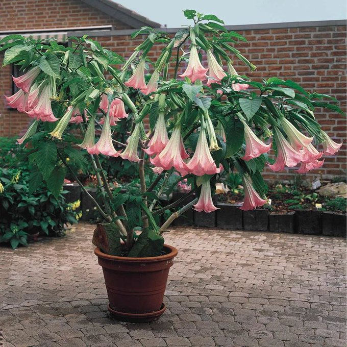
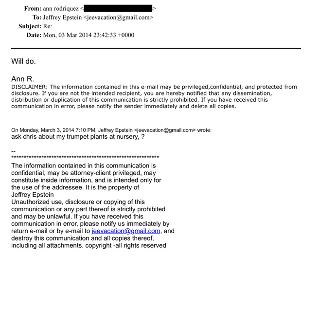
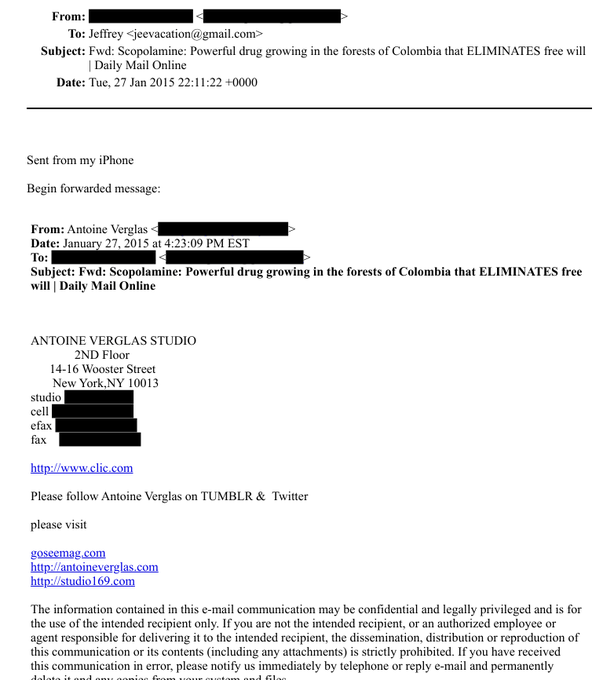

药物实验室
@RXdruglab
假的，东莨菪碱没这么厉害，不会顺从。东莨菪碱是谵妄剂，吃了之后谵妄，谵妄是不可控，和顺从没什么关系，失忆的话会有点，剂量更高会昏厥（会不会死亡我也不知道）。这个可以当晕车药，相对来说不是罕见东西。



AusMini
@aus_mini
💥#爱泼斯坦 新解密文件炸了！
2014-2015年邮件里爱泼斯坦反复问“我的trumpet plants（天使喇叭花）在苗圃怎么样？”
这种花超毒，提炼出的Scopolamine（东莨菪碱）就是臭名昭著的“魔鬼之息 / Zombie Drug”！仅几分钟就能让人 失去自由意志，像行尸走肉般顺从😱
事后记忆全抹除⚠️ https://t.co/Imoji9yqdS